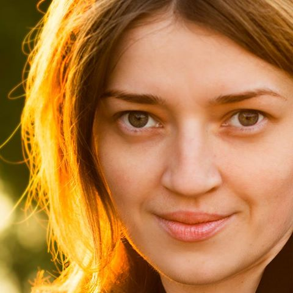

My name is Iryna Sukhomlynova and I cannot tell you that in one beautiful day I realized, that I should become photographer.
In my family my father was amateur photographer. I saw everything: from picture composition to development of film. But those times I did not get interested by photography.
While I was student, studying foreign languages (French and English), I started attending Painting and Drawing courses.
By this, I developed my feeling of composition, perspective, light and shadow balance, color, learned to highlight emotion.
My first own camera was automatic Kodak with color film.
Then I got digital soap-dish Canon.
Моя перша дзеркальна фотокамера, якою я почала заробляти, була Nikon D7000, яку мені подарував мій чоловік. Цією камерою я робила фоторепортажі ділових зустрічей, конференцій, корпоративів. Працювала з ілюстрованими виданнями.
Зараз я працюю з повноматричною камерою Nikon D800.
Ставши фотографом, я бралася за будь-який жанр, щоб набратися досвіду і вдосконалюватися як фотограф.
З часом спектр моїх інтересів почав звужуватися, і все більше я спрямовую свою енергію на головну сферу моїх інтересів - портрет.
Портрет завжди посідав особливе місце у мистецтві. Крім професійної майстерності фіксувати подібність людини, фотограф повинен вміти створювати образи.
Мені подобається портрет як постановочний, так і документальний, і більш вужче, портрет у фешн індустрії.
Як фотограф, який постійно розвивається, я залюбки роблю сімейні фото, love story, фоторепортажі культурних подій, пейзажі, натюрморти.
Я із задоволенням працюю з клієнтами і знайомлюся з новими людьми.
Мене цікавить думка моїх клієнтів, і я завжди враховую їхні побажання щодо зйомки.
Співпраця фотографа і того, кого він фотографує базується на професіоналізмі, довірі, комфортних стосунках, приємній атмосфері. Як результат, задоволені обидві сторони.
Бажаю Вам гарних і особливих фотографій!